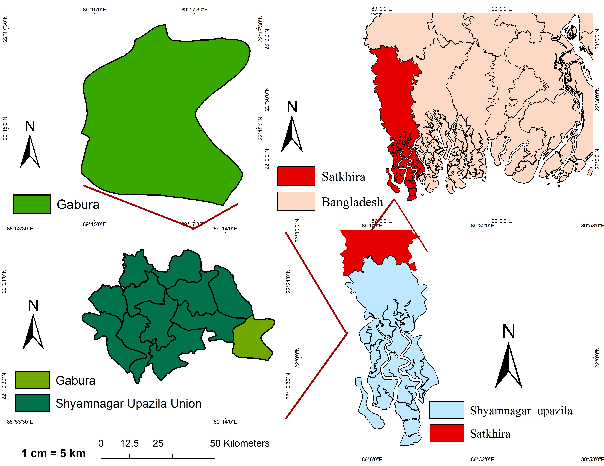
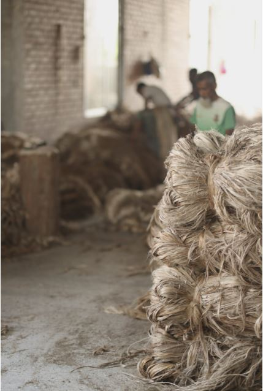

Nushrat Nureen
Urban and Regional Planning Graduate | Masters Student at Khulna University of Engineering & Technology
Urban and Regional Planning Graduate | Masters Student at Khulna University of Engineering & Technology
Welcome to my portfolio! I am a motivated graduate of Urban and Regional Planning with strong research and analytical skills. I am quick to learn, open to new ideas, and work well in teams. I am passionate about pursuing a career in academia and research, where I hope to make meaningful contributions through innovative studies and sustainable planning solutions.


A comprehensive study focusing on the female demographic in the cyclone-prone Gabura union.

Contributed to data analysis and index development utilizing Principal Component Analysis (PCA) and Analytical Hierarchy Process (AHP) methodologies to assess vulnerability and resilience in coastal communities.

Collaborated closely with German project partners, handling overarching research tasks including:

Subject: Environmental Issues in Real Estate
Ready to collaborate or discuss research opportunities? Let's get in touch!
📧 Email: nushratnureenzaana@gmail.com
💼 LinkedIn: https://www.linkedin.com/in/nushrat-nureen-zana-0066b7171/